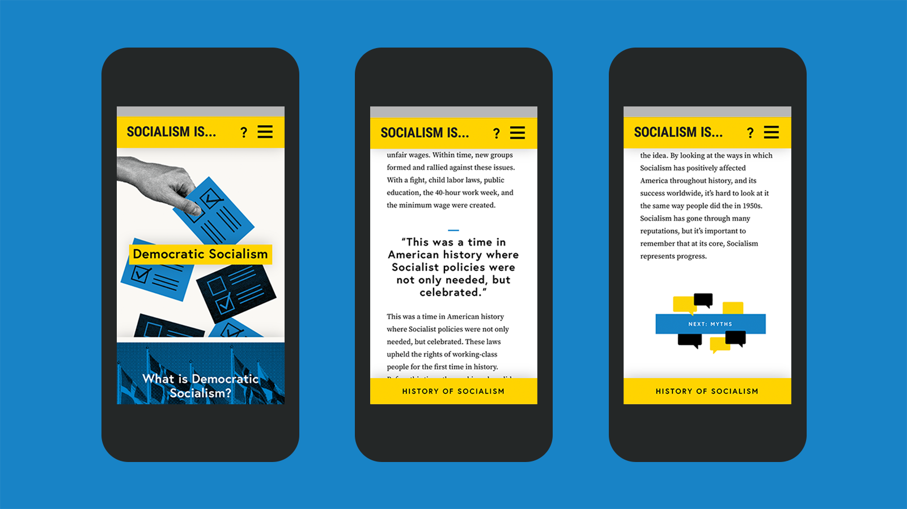
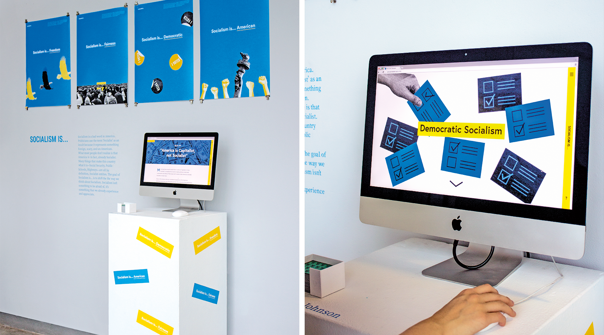

Concept
Socialism Is... is a campaign that consists of a fully responsive website, posters, and an exhibition. The visual imagery pays homage to designer Lester Beall, who created the famed Rural Electrification Administration posters, examples that use design to successfully interpret complex subjects to a wide audience.
View the live web component here.

Process
Many things that make America what it is—Social Security, Public Schools, Highways—are all, by definition, Socialist concepts. The campaign utilizes familiar visual metaphors, a cheerful color palette, and accessible language to help Americans realize that Socialism isn’t something to be afraid of, it’s something that we already experience and appreciate.
Impact
More Americans now than ever are coming around to the idea of Socialism. Socialism Is…, as well as several other fantastic campaigns, have helped contribute to this shifting paradigm.
Socialism Is… has been displayed in multiple exhibitions, including MICA’s Artwalk and AIGA Boston’s New Voices, Unique Visions 2016, and was a finalist in the Adobe Design Achievement Awards.
